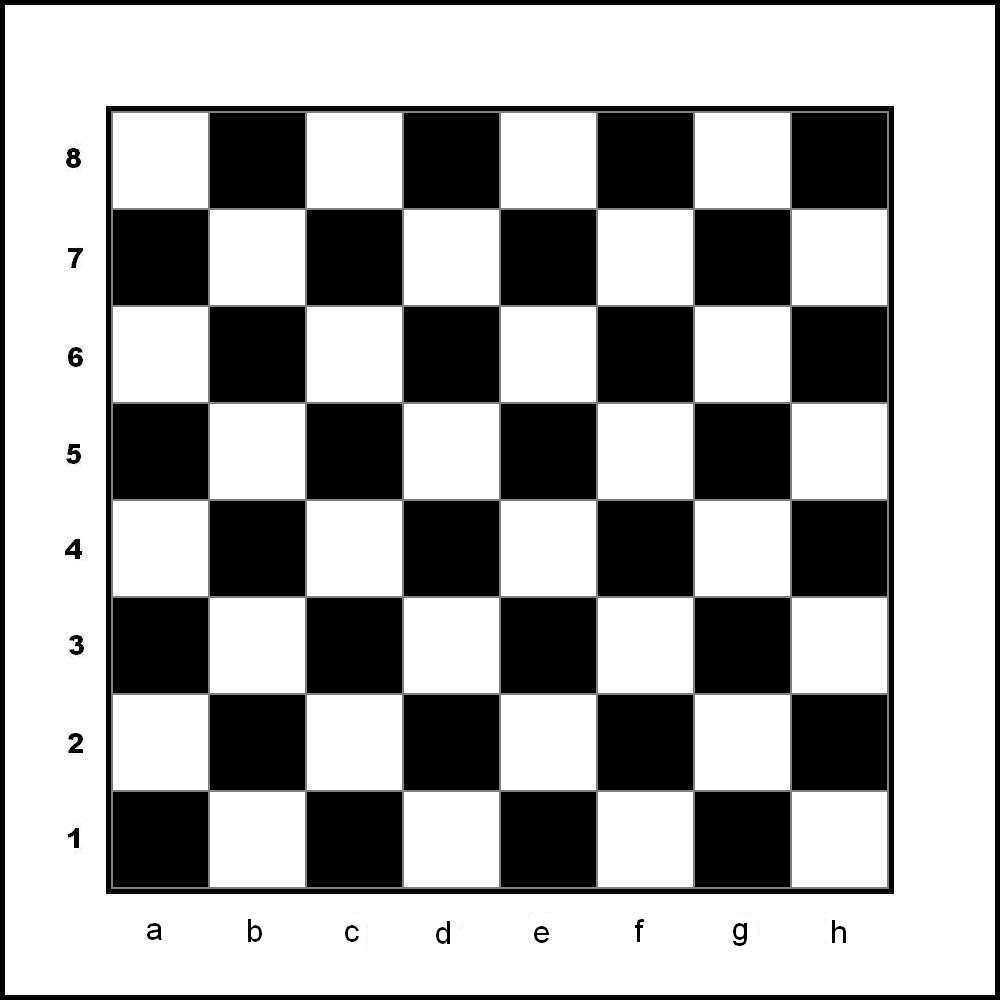
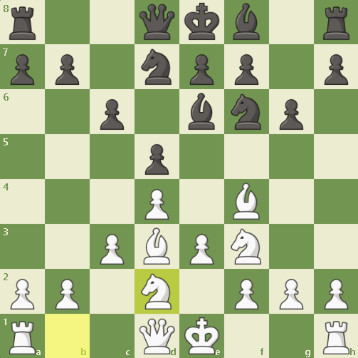
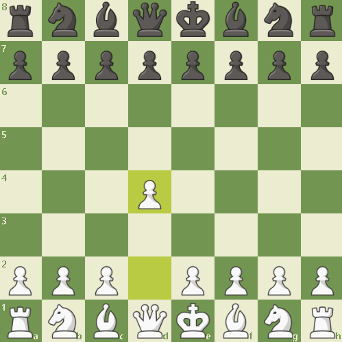
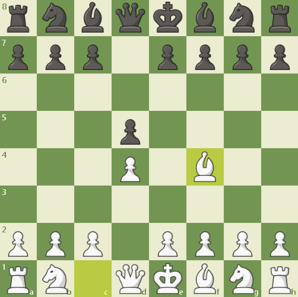
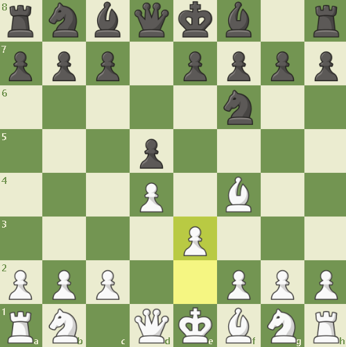
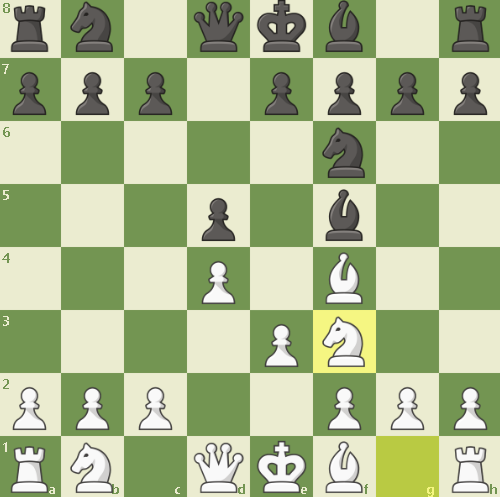

hoje, neste momento venho trazer como jogar xadrez passo a passo. O xadrez, como qualquer outro jogo de tabuleiro (ou a maioria) é em um tabuleiro 8x8. Nele há diversas peças
O jogo em si, é perfeito, segundo o grande mestre Grarry Kasparov:
"Luck in chess comes from your opponent's mistakesque siginifica
A sorte no xadrez vem dos erros do seu oponenteou seja, não há sorte no xadrez, apenas possibilidades "infinitas"
O jogo de xadrez obiamente tem dois lados, o das negras e das brancas. As brancas, tem a obrigatoriedade de jogar primeiro, trazendo a tona as aberturas, existe o das brancas e das negras, as brancas de ataque e as negras de defesa geralmente. O tabuleiro em si, é composto assim:

como pode ver, é formado por casas pretas e brancas. As aberturas como eu havia falado anteriormente, é muito diversificado, há diversas formas de efetuar os primeiros lances, sendo os mais famosos:
Deve estar se pergunntando o que são essas denominações, essas coisas são aquilo que nos ajuda a identificar onde tal "casa" é. Cada peça anda de determinada forma, é o que iremos ver a seguir.
O peão em si só anda uma casa para frente, mas quase ele se move pela primeira vez ele pode se mover 2 xasas se desejar. Além disso, ele "come" as peças em apenas uma casa para as casas que estão na frente dele mas apenas nas diagonais. Quando ele anda duas casas e houver um peão ao lado dele quando as duas casas forem andadas, o peão oponente pode simplesmente "comer" o seu peão como se tivesse andado apenas uma casa, vice-versa.
O cavalo, simplesmente anda em "L", pense que ele anda duas casas para frente e uma para qualquer lado entre direita e esquerda em uma casa, ele pode fazer isso na direita, esquerda, cima, baixo apenas. Ele é o único que pode "pular peça, passando por cima."
O bispo é aquele que pode simplesmente andar em diagonal apenas. Entretanto, ele pode ir para quantas casas quiser nesta condição
A torre é a mesma coisa que um bispo, mas, ao inves de ir em diagonal, ele vai reto para qualquer lado.
O rei, é a pea mais relevante do tabuleiro, pois, sem ela o jogo acaba, o objetivo do jogo é literalmente matar o rei , ele em si, anda uma casa para qualquer direção desde que ela não esteja sendo ameaçada
Por fim, a rainha. A rainha em si é a peça mais forte em questão de locomoção do jogo. ela é tipo a torre e o bispo juntos.
| Melhores jogadores | ||
|---|---|---|
| Magnus Carlsen | Gary Casparov | Bobby Fisher |
Agora iremos falar sobre aberturas, aberturas em si são utilizadas no inicio de jogo, os lances iniciais. A abertura é algo obrigatório a ser estudado e aprimorado caso você deseje ser bom neste jogo, a abertura serve para você desenvolver suas peças, ou seja, tirar elas da casa inicial e coloc-las em uma casa que domine o centro. Anteriormente havia falado que as aberturas em si existe diversas, mais de 1400 para você ter noção. mas existem algumas mais famosas e mais utilizadas por diversos motivos. existem aberturas que cauteram umas as outras, mas tudo depende de habilidade. O mais indicado em si é que você pegue 2 aberturas e aprimore elas ao extremo pois essa historia de "abertura que cauteram outras" só ocorre com partidas de grande nível, de mestres de xadrez, aproximadamente por volta dos 2100 de rating. para você ter uma comparação ideia, um jogador intermediario tem por volta de 1600, um iniciante 500 a 1000. Em si para aumentar os seu rating você precisa estudar aberturas, meio de jogo e coisas do gênero, mas isso deixamos para outro momento. Agora, iremos falar sobre uma abertura muito utilizada: Abertura Londrina. Esta abertura em si é muito bem feita, ela ganhou esse nome depois do torneio em londres em 1922. dizem que o Sistema Londres foi criado e desenvolvido a partir das ideias do enxadrista inglês Howard Staunton no século XIX. Mas em si, não existe um unico criador desta abertura pois ela foi criada e se popularizando por muitos anos, este homem apenas fez com que esta abertura tenha mais reconhecimento. O nome “Londres” veio porque essa abertura foi bastante usada em torneios realizados em London por jogadores ingleses
A abertura em si funciona com:

Lembrando que B:bispo C:cavalo D:dama T:torre R:rei e se só houver a casa é um peão
Agora iremos ver como cada peça deve ficar em X lugar e o por que.
Essa abertura é constituida por 7 lances como haviamos visto anteriormente, no inicio utilizamos D4 para dominar o centro e conseguir desenvolver o bispo

Após isso, desenvolvemos o nosso bispo, colocando ele em F4 para assim ele ter um alcance melhor e conseguir/tentar dominar o centro.

O terceiro lance é utilizado E3 para assim dar apoio ao peão de D4 e futuramente conseguir ter uma cadeia de peões muito forte no meio de jogo

O quarto lance feito é do cavalo do lado direito do tabuleiro (o lado H) que é desenvolvido para F3

O proximo lance é feito para terminar a "escada de peões" é um meio muito bem visto no xadrez que se constitui de um peão na frente e nas diagonais abaixo terem 1 ou dois peões. Fazendo isso podemos ter uma defesa extremamente eficiente no centro

O proximo lance que devemos fazer é colocar o nosso cavalo em uma casa que ele seja mais util que na casa inicial, assim decidimos coloca-lo em D2 para que ele consiga ter mais alcance e desenvolver ele.

O sétimo e último lance da abertura é colocar o nosso bispo do lado direito do tableiro (lado do H) em um local que faça sentido para o tal, assim desenvolvendo ele, colocamos ele em D3 para ele ter uma boa diagonal em praticamente todos os casos

Vale ressaltar que a forma que você coloca as peças nessa abertura geralmente n afeta no resultado, você deve ver como o oponente mexe suas peças para assim mexer X peça pois não precisa seguir uma ordem exata, você pode ir onde "seu coração mandar". Por isso chamamos essa abertura de Sistema Londres, ela é moldada seguindo os lances do oponenente, há diversas e diversas variantes, dentre elas, essa é a mais conhecida. Além disso, podemos estudar meio de jogo também, entretanto, é necessário ter a linha semelhante para que a abertura dê certo
Melhores sites para se jogar xadrez:
O mais famoso